The Tools menu holds tools that show what a program does, each in a window of its own. Choose one in the list to read about it.
What every tool has ARM X-Ray BHT Simulator Bitmap Display Data Cache Simulator Digital Lab Sim Dynamic Instruction Counter Floating Point Representation Keyboard and Display MMIO Simulator Memory Reference Visualization Pipeline Simulator Memory Map
What every tool has
- Each tool opens centred over the ARES window and does not block it. Several tools can be open at once; choosing an open tool again brings its window to the front.
- Connect to ARM: the tool observes the program from now on, also later programs. It can be connected before anything is assembled, and stays connected when the program is assembled again or its file is closed.
- Disconnect from ARM: the tool stops observing; what it shows stays.
- Reset: the tool's own numbers start again from zero. The program is not touched, except by Floating Point Representation, whose Reset also sets its register to 0.0.
- Close: closes the tool and disconnects it. Escape does the same.
- Return or Enter presses the focused button, else Connect to ARM.
- The numbers follow the program after every Step and several times a second while it runs.
A tool that is not connected costs nothing; a connected one can make a run at full speed take longer, as its page says.
ARM X-Ray
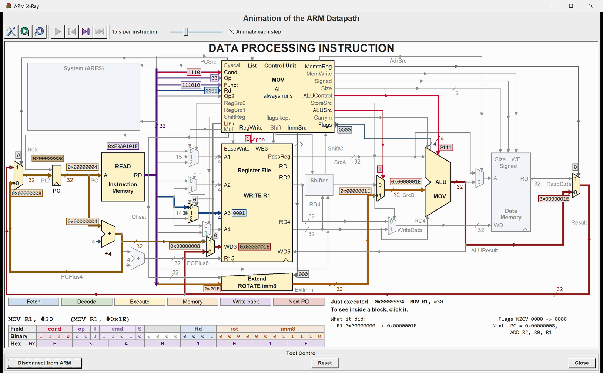
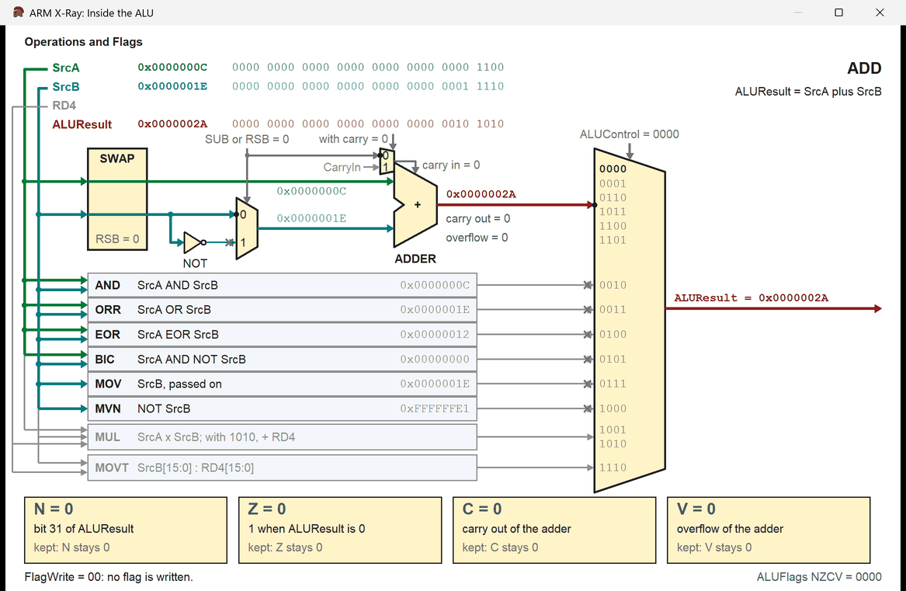
ARM X-Ray shows how the processor runs an instruction, as a film: the values travel along the wires of the datapath, from the PC to the last write. The diagram is a textbook's single-cycle ARM processor, with a few additions that real programs need. The textbook is Harris and Harris, Digital Design and Computer Architecture: ARM Edition.
Click Connect to ARM, then Step through the program, with the tool's own Step button or the main window's (F7), or with One step forward (O), which goes one step of the film at a time. Assemble (F3) and Backstep (F8) are on the tool's toolbar too. Each Step plays the film of the instruction that just ran, in six parts: Fetch, Decode, Execute, Memory, Write back and Next PC. In the real circuit all of this happens within one clock cycle; the film spreads it out so that it can be read.
ARM X-Ray and the Pipeline Simulator (Tools menu) show the same program in two ways. ARM X-Ray shows one instruction going through a datapath that does everything in one clock cycle; the Pipeline Simulator shows when each instruction would be in each stage of a datapath cut into five stages, with several instructions inside at once. The stages have the same names in both, Fetch, Decode, Execute, Memory and Write back (IF, ID, EX, MEM and WB there), and the program's results never differ.
The large heading above the picture names the kind of instruction. Under the picture, at the left, the strip marks the part that plays, in the colours of the Pipeline Simulator's stages (Fetch is the colour of IF, Decode of ID and so on; Next PC has its own). Rest the mouse on a part that plays or has played: its tip says what its steps have done so far, one sentence for each step, in order, with the real numbers; a part that has not been reached has no tip. At the right, in bold, the tool says what it shows, Just executed or Runs next for example, with the instruction's address and text, and under it stands "To see inside a block, click it." What the instruction did follows them.
A value leaves the block that makes it and travels along its wire as a small label, lit on a band of its own colour, to every block that takes it, and rests beside that block's input once it has arrived: lit for that step and the next, then on a light tint of its colour, so that it stays easy to read. What the instruction changes, the register written, the memory word, the flags and the PC, rests on the green that marks changed rows in the Registers pane. A value keeps its colour wherever it goes: what comes from a field of the word keeps the field's colour through the blocks it passes (Rn's number, the value read for it and SrcA; the second register's number, its value, the shifter's output and the data stored; the immediate and ExtImm; Rd and A3), and after a multiplexer a wire has the colour of the input it took. New values have colours of their own: the PC and its sums brown, the ALU's result dark red, with the address and the result written back that come from it, and the data read from memory blue. R15 reads as PCPlus8, so its value has the PC's colour. A register's number travels on its wire as its four bits, as the table shows them: 1101 is R13; the register file's word, READ R13, names the register, and so do the tips and the panel. A block that the instruction uses waits in a calm blue until its inputs have arrived, lights up yellow while it works and says what it does: READ R1, ADD, WRITE R3; it keeps a lighter tint once it is done. A block that the instruction does not use stays pale. At a multiplexer its inputs arrive: a dot marks the input it takes, a gray cross one that it rejects, and its select signal arrives with its value. A control signal is red when it is 1, gray when it is 0, and dashed when the tables say X, does not matter; its tip says so too. Only what the instruction has travels: bits that are no field of it, and a register, a block or a multiplexer that only they or an X would steer, stay gray, with no dot, no cross and no value. So does a control signal that steers only such gray parts; its tip still gives its value. A write whose enable is 0 shows a gray bar where the data arrives: nothing is written. The control unit shows the condition check, for example NE: Z = 0, executes. When the condition fails, nothing is written and the PC takes PC + 4. The wires carry no bit numbers, only their arrows and, across a bus of more than one bit, a slash with its width: which bits of the word a field's wire carries, the table under the picture shows, and so does the wire's tip.
Under the strip stands the instruction as you wrote it, as the Source column shows it, with its Basic form after it in brackets when the two differ: MOV R0, #20 (MOV R0, #0x14). An instruction that no line of yours made by itself, such as the second word of a line that makes two, shows its Basic form alone. Under it, a table breaks its word down, bit 31 at the left. Row Field names the fields of its kind under the textbook's names, each cell as wide as its bits; row Binary has their bits, and row Hex the word's eight hexadecimal digits, each under its four bits: the number on the wire Instr. The table is the key of the colours: when the word splits, each field's cells take the colour of its value on the picture, and the Hex row the colour of Instr; bits that are no field of the instruction stay gray, without a name. Rest the mouse on a cell to see its field's name, its bits, its value and where it goes. Beside the table, when the film ends, the panel lists what the instruction did, as the program really ran it, in two columns: each register changed with its old and new value and each word of memory written, also one stored over the same value, as many as the columns hold (the rest are counted; the Registers pane and the memory show them all) and the flags before and after. The instruction that runs next stands in the panel always, during the film too. The panel and the film name an instruction as you wrote it, else by its Basic form; the control unit names the operation it decodes. Rest the mouse on a wire or a block to see its name, its width, what it is for and its value now in hexadecimal, decimal and binary.
Click a block to see inside it; over a block that opens, the pointer becomes a hand. The control unit shows the Main Decoder's and the ALU Decoder's tables with the rows of this instruction lit, the PC Logic, and the Conditional Logic that checks the condition against the flags, with the gates that make PCSrc, RegWrite, MemWrite, FlagWrite and Syscall. The register file shows its registers, the three ports that read and the two that write: WD3, and the base write port. The ALU shows its adder with its carry in, its logical units, its multiplier and the unit that joins MOVT's two halves, the multiplexer that ALUControl drives, and how it makes the flags. Extend shows its five ways of making the immediate and the pass counter's offset, and the shifter its shift and where its amount comes from. The instruction memory and the data memory show the words around the address, with the name of the DE1-SoC's device where a device lies; the data memory also shows its load extender, which widens a halfword or a byte read to 32 bits. Each window plays at the same speed as the film and follows it: Play, Pause, One step forward, One step back and Skip to end move it too, and a Step or a Backstep shows the new instruction in it. The multiplexers, the adders and the PC have their tips only. Each window names what it shows at its top, Decoder and Conditional Logic for the control unit for example; rest the mouse on the name to see what the block does. A register number that comes in on a wire shows its four bits there too (A1 = 0001), while the register file's rows and its word, READ R1, name the register.
The film's picture buttons stand beside Assemble, Step and Backstep; a tip gives each one's name and key. There are two ways to run the next instruction. Step (F7) runs it and plays its whole film; until that film has ended, of the film's buttons only Pause (Space) and Skip to end (E) work. One step forward (O) runs it and plays only the first step of its film, then waits: each press plays the next step. While such a film has not ended, One step back (B) shows the step before, Play plays from there to the end, the same button showing Pause while it plays (Space), Skip to end shows the whole instruction at once (E), and Step waits until the film has ended. Once a film has ended, Step and One step forward run the next instruction; after One step forward, One step back still goes back into the film, which has then not ended any more. Backstep (F8) takes the whole instruction back, at any time. The main window's Step, Go, Backstep and Reset work at all times too, and end a film that has not ended. While the program runs, the film's buttons are off. The slider sets how long the film of one instruction lasts, from 5 to 40 seconds; ARES keeps your choice. Without Animate each step, a Step shows the whole instruction at once, and One step forward still goes one step at a time.
The window can be made larger, or maximized: once its size has settled, the picture is drawn again as large as the window holds it, in proportion, its text with it, and a film that plays goes on. It shrinks again down to the size at which the smallest text has 8 points. The windows inside the blocks grow and shrink in the same way, each with a size of its own. Each window opens at its usual size.
Only Step and One step forward play a film. While the program runs there is no film: at a slow run speed each instruction shows finished, and at full speed the tool does nothing until the run stops, so it costs nothing. Backstep plays no film: the tool shows what it showed before the Step that Backstep undoes, the instruction that is now the last one run, finished. While nothing has run, after Assemble or Reset and after undoing the first instruction, the picture is empty, the tool says Nothing has run yet and the panel names the instruction that runs next. After a run that kept no history for Backstep, the tool shows the instruction at PC, which has not run yet, under the line Runs next. Nothing to show means that Backstep has undone all it kept and can go back no further.
The additions to the textbook's datapath are these. The ALU has more operations: ALUControl has four bits, with EOR, BIC, RSB, MOV and MVN after the textbook's ADD, SUB, AND and ORR; NoWrite stops CMP, CMN, TST and TEQ from writing a register. A shifter stands between RD2 and the ALUSrc multiplexer, for shifts by an immediate, RRX included: the signal Shift is 1 when it changes its input, and Extend rotates the 8-bit immediate. ShiftC writes C from the shifter or the rotated immediate, in a logical operation with S. A store with a register offset reads three registers: A4 and RD4 are a third read port, and StoreSrc takes WriteData from RD4. The signal Size tells the data memory to move a word (00), a halfword (01) or a byte (10), for LDRB, STRB and the halfword and signed transfers. A negative offset subtracts. BL sets Link: two small multiplexers send 14 to A3 and PCPlus4 to WD3. BX reads Rm on the port of RD2; the ALU passes it on as for MOV, and the result goes to the PC. The AdrSrc multiplexer gives the data memory its address: ALUResult, or RD1, the base as it was, for post-indexing. The register file has a second write port for the base register, the base write port: BaseWrite opens it, WD5 brings ALUResult, and it writes the register that A1 reads (A5 = A1 = Rn). The control unit has a pass counter for LDM, STM, PUSH and POP: List brings it the register list (Instr 15:0); for each pass it sends the number of one register as PassReg, which the register file takes as A3 for a load or as A4 for a store, and an offset as Offset, which Extend passes on when ImmSrc is 011; its signal Hold keeps the PC until the last pass. MUL and MLA have a multiplier inside the ALU: ALUControl 1001 multiplies SrcA by SrcB, 1010 adds RD4 to the product, and the tip of the strip's Execute shows the whole multiplication. The control unit tells them from data processing by Op2, bits 7:4 of the word, which are 1001. Its signal Mul, 1 for MUL and MLA, makes the RA1 multiplexer take its third input, Rs (bits 11:8), and the A3 multiplexer its third input, bits 19:16, the register that MUL and MLA write. MLA reads Ra (bits 15:12) on A4, and RD4 goes into the ALU on a wire of its own. A shift by a register, such as ADD R2, R1, R0, LSL R3, reads Rs (bits 11:8) on A4: the signal ShiftReg, 1 only for it, makes the A4 multiplexer take bits 11:8 instead of 15:12. RD4 goes into the shifter, whose own multiplexer then takes the amount from RD4[7:0] instead of bits 11:7; Shift is 1 for every shift by a register, as the control unit cannot see Rs: an amount of 0 leaves the value and C as they are, and from 32 on every bit has gone. ADC, SBC and RSC add the C flag: the wire CarryIn brings it from the flags register in the control unit to the adder, with ALUControl 1011, 1100 and 1101. TEQ has its row in the ALU Decoder: an exclusive OR that only sets the flags, like TST. BLX Rm is the row of BX with Link 1: LR takes PCPlus4, and the PC takes Rm. NOP has a row of its own in the Main Decoder, in which nothing is written. Op2 also tells BX (0001) from BLX (0011), and a shift by a register (bit 4 is 1) from a shift by an immediate. ImmSrc has three bits: 000 rotates imm8, 001 zero-extends imm12, 010 sign-extends imm24 and multiplies it by 4, 011 passes on the pass counter's offset, 100 joins imm4 (bits 19:16) and imm12 into the 16-bit immediate of MOVW and MOVT, and 101 joins imm4H (bits 11:8) and imm4L (bits 3:0) into the 8-bit offset of a halfword or signed transfer. MOVW and MOVT share a row of their own in the Main Decoder, and the ALU Decoder tells them apart by cmd. MOVW writes its immediate with zeros above it: the ALU passes SrcB on, as for MOV. MOVT reads its Rd on A4 and keeps its low half: RD4 goes into the ALU, whose ALUControl 1110 joins the immediate, as the high half, to the low half of RD4. LDRH, STRH, LDRSB and LDRSH have rows of their own in the Main Decoder, which tells them by Op2 (1SH1) and by Funct2, bit 22, which says whether the offset is an immediate or a register. The signal Signed makes the load extender inside the data memory copy the sign bit of the halfword or byte read into the bits above it, for LDRSH and LDRSB; with Signed 0 they get zeros. The halfword and signed transfers write their base through the base write port and use the AdrSrc multiplexer as LDR and STR do. The example xray_tour.s (File > Open Example) uses only instructions of this datapath, so that every instruction it runs plays a film.
LDM, STM, PUSH and POP move one register in each pass through the datapath, a clock cycle each. The film plays one pass after another, the first at the chosen speed and each other in a third of that time; the heading and the strip's tips say which pass plays, for example pass 2 of 4. The registers go in the order of their numbers, and the PC last, so a POP that loads the PC ends as a branch. With write-back (the ! of LDM and STM, and every PUSH and POP) the base write port writes the base in every pass, 4 further on, so that each pass is a load or store of one register next to the base, and the last pass leaves the base where the instruction leaves it; counting down (PUSH, STMDB), the passes go from the highest register. Without write-back the base stays and each pass takes the register's distance from it as its offset.
LDR, STR, LDRB and STRB with write-back or post-indexing write their base register too, through the base write port. With write-back (the ! of LDR R0, [R1, #4]!) the address is the base plus the offset, ALUResult, and the base takes the same value. Post-indexed (LDR R0, [R1], #4) the address is the base as it was: AdrSrc is 1 and the multiplexer takes RD1, while the ALU works out the new base, which the base write port writes at the clock edge. A single-register PUSH or POP is such a store or load of SP.
An SVC asks the system for a service: its 24-bit immediate is the number of the service. The control unit sets the signal Syscall and hands the call to the box System (ARES) at the top left, which shows the number, the name of the service and what it did, for example SVC #1, print integer: R0 = 25. ARES performs the service itself, as MARS performs a syscall; a real processor would enter the operating system instead. When the service waits for input, the film stops at the system, and the SVC ends once you have typed a line in Run I/O. The SVC itself writes no register: what the service changed shows in the panel.
Whatever writes the PC, bit 0 of the address does not reach it. When that bit is 1 the processor goes on in Thumb code, and the strip's tip of Next PC and the panel say so.
Some instructions lie outside this datapath: S with Rd = 15; long multiplies, MLS and UMAAL; SWP; LDRT, STRT, LDRBT, STRBT, LDRHT, STRHT, LDRSBT and LDRSHT; LDM and STM with ^; an LDM that loads its base before its last pass, or that counts down with write-back and loads the PC; encodings that ARMv7 leaves UNPREDICTABLE, such as write-back to the register a load or store moves, or the PC as a register of a multiply, of a shift by a register, of MOVW or MOVT or of a halfword transfer; doubleword and exclusive accesses (LDRD, STRD, LDREX, STREX); MRS, MSR, CLZ and the hints other than NOP; floating point, coprocessors and NEON; and anything with condition 1111. For these the diagram stays pale and gray, and the panel says why on its first line (its tip has all of it) and lists what the instruction changed.
Reset clears the picture until the program does something more. The tool stays connected when the program is assembled again or its file is closed.
ARM X-Ray follows MIPS X-Ray 2.0 of the MARS simulator, developed by Márcio Roberto, Guilherme Sales, Fabrício Vivas, Flávio Cardeal and Fábio Lúcio.
BHT Simulator
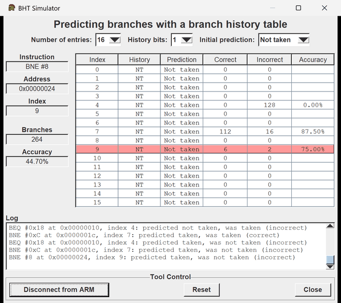
The BHT Simulator shows how a branch history table predicts the conditional branches of the program: whether each one will branch (taken) or go on with the next instruction (not taken), and how often the predictions are right.
Click Connect to ARM, then run the program (Go, Step). The table follows the program, also while it runs at full speed. Disconnect from ARM stops the observing; the table stays. Close closes the tool and stops the observing.
The conditional branches are the B instructions with a condition: BEQ, BNE, BCS (BHS), BCC (BLO), BMI, BPL, BVS, BVC, BHI, BLS, BGE, BLT, BGT and BLE. B without a condition (or with AL) always branches and is not predicted, nor are BL, BX and the other instructions that change PC. A branch is taken when its condition holds for the flags N, Z, C and V as the branch runs: BNE after CMP R0, #3 is taken when R0 is not 3.
Number of entries (8, 16 or 32): the rows of the table. A branch uses the entry of its address divided by 4, modulo the number of entries: with 16 entries the branch at 0x0000001c uses entry 7, and so does the branch at 0x0000005c. Branches that share an entry disturb each other's predictions.
History bits (1 or 2): how many of its last outcomes an entry remembers. With 1 bit the entry predicts what its last branch did. With 2 bits its prediction changes only after two wrong predictions in a row, so a loop that ends now and then stays predicted taken.
Initial prediction (Not taken or Taken): the prediction of every entry at the start. Its history starts as if its branches had always done that.
Choosing another value in one of these lists starts the table again, as Reset does.
The table: Index, the entry's number; History, the outcomes it remembers, the oldest first (T taken, NT not taken); Prediction, what it predicts for its next branch; Correct and Incorrect, how many of its predictions were right and wrong; Accuracy, the share of right ones.
At the left: Instruction, Address and Index of the branch whose entry is coloured. While the program waits before a conditional branch (after Step, Pause or at a breakpoint), its entry is light yellow, and its Prediction is the one about to be checked. Otherwise the entry of the last branch executed is coloured: green when its prediction was right, light red when it was wrong. Branches and Accuracy are for all the branches executed.
The log has a line for each branch executed, with its entry, the prediction and what the branch did. It keeps the last 1,000 lines. While the program runs at full speed the table follows it and the log waits: it gets the newest lines when the run stops (Pause, a breakpoint, the end).
The window can be made larger or maximized: the table and the log grow. The table takes most of the height while it has more entries than it shows, the log the rest.
A branch counts once, when it runs. A breakpoint, Pause or Step that stops before it does not count it; it counts when the program goes on. A branch to itself whose condition holds (BEQ . for example) ends the program, as B . does, and does not count.
The table keeps what it has learned when the program is assembled again, reset (Reset, F12) or stepped back (Backstep undoes the instruction, but the branch was executed): only the tool's Reset and the lists above start it again. The tool stays connected when the program is assembled again or its file is closed.
While the tool is connected a run takes longer: ARES looks at each conditional branch as it runs, and each conditional branch in the program makes every instruction a little slower. A loop of 10,000,000 instructions that runs BNE 2,000,000 times takes a few seconds instead of a tenth of a second.
Bitmap Display
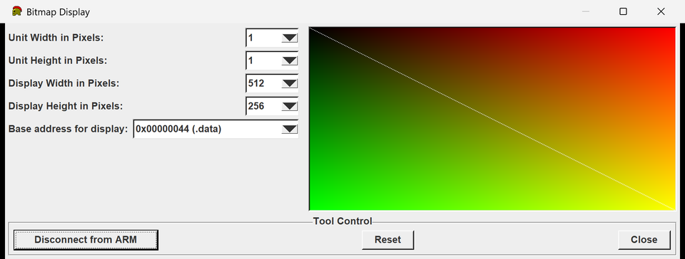
The Bitmap Display shows a part of memory as a picture: each word is one unit of the display, drawn in the colour its value gives.
Click Connect to ARM, then run the program (Go, Step): the display shows the words as memory holds them, also while the program runs at full speed. Disconnect from ARM stops following the program; the picture stays. Close closes the tool.
Colours: a word's value is 0x00RRGGBB, with red in bits 23-16, green in bits 15-8 and blue in bits 7-0; bits 31-24 do not matter. 0x00FF0000 is red, 0x0000FF00 green, 0x000000FF blue, 0x00FFFF00 yellow, 0x00FFFFFF white and 0 black.
Units: the word at the base address is the unit at the top left, the word 4 bytes on is the unit to its right, and so on to the end of the row; the next row goes on with the next word. With N units across, the unit in row r and column c (both counted from 0) shows the word at the base address + 4 x (N x r + c).
Unit Width in Pixels and Unit Height in Pixels: the size of a unit. Display Width in Pixels and Display Height in Pixels: the size of the whole display. The display is (display width / unit width) units across and (display height / unit height) units down: 512 x 256 pixels in units of 1 x 1 pixel are 512 x 256 units, 131,072 words (512 KB); in units of 8 x 8 pixels they are 64 x 32 units, 2,048 words.
Base address for display: where the words start. .data is the start of the program's data (its first section that is not code); heap is the first word after the program, where the memory that SVC #9 hands out begins. While a program is loaded the list shows their addresses in it, and the display follows them when another program is assembled. While no program is assembled the list shows them gray, with "no program assembled" instead of an address, and they cannot be chosen. Or type an address, also without a program: 0x and hexadecimal digits or decimal digits, and press Enter: a multiple of 4, with the whole display inside the DDR3 memory (0x00000000 to 0x3FFFFFFF). A wrong address rings the bell and the old one stays. With a typed address, a display size that would reach past the DDR3 memory rings the bell too and the old size stays.
What the display shows: while the tool is connected, the words as memory holds them after each step, during a run (up to about 30 times a second, see Speed), when the run stops, and after Backstep, Reset (F12) and Assemble: also words that system calls write (SVC #8 reading a string, for example), words Backstep puts back and the program's first values after Reset or Assemble. The tool stays connected when the program is assembled again or its file is closed; while no program is loaded the picture stays as it is. While the tool is not connected the picture stays too, and a change of a setting makes the display black.
The tool's Reset button draws the display again: from memory while the tool is connected to a program, else black.
On a scaled screen each pixel of the display is a square of whole screen pixels, as near to the screen's scale as whole pixels allow (2 x 2 at 200 % and 225 %), so the display keeps about its size and its units stay sharp. A display that would then not fit on the screen is drawn with fewer screen pixels per pixel, and with scroll bars when even one screen pixel per pixel does not fit.
The window can be made larger or maximized: the display grows with it, in whole steps. It is drawn with as many whole screen pixels per pixel as the room right of the settings holds (3 x 3, for example), never fewer than in the window as it opens, and a display with scroll bars shows more of itself. The settings keep their size.
Speed: the tool adds nothing to the instructions themselves. It reads the display's words when the window shows the program's state and draws only the rows that changed. A small display costs next to nothing. A large one takes longer (a display of 1024 x 1024 units has 4 MB to read, and a million pixels to draw when all of it changes), so while the program runs the tool skips refreshes until reading and drawing take a quarter of the time at most: the program runs at least three quarters as fast as without the tool, and the display still follows it a few times a second.
Data Cache Simulator
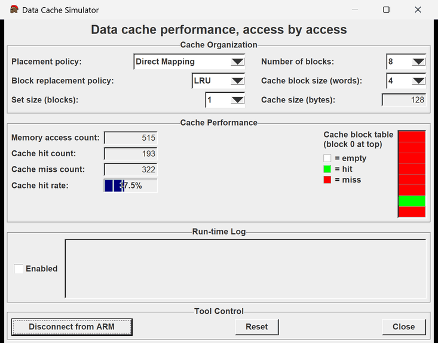
The Data Cache Simulator shows how a data cache would serve the program's loads and stores: which memory accesses find their word in the cache (hits), and which have to bring its block into the cache first (misses).
Choose the cache's organization, click Connect to ARM, then run the program (Go, Step): the numbers, the block table and the log follow the program, also while it runs at full speed. Disconnect from ARM stops the observing; what the tool shows stays. Reset empties the cache and the log and sets the numbers to 0. Close closes the tool and stops the observing.
Cache Organization
Placement policy: where a block of memory may be kept. Direct Mapping: in one block of the cache, which its address decides. Fully Associative: in any block. N-way Set Associative: in any block of one set of N blocks, which its address decides.
Block replacement policy: which block of a full set makes room for the new one. LRU: the one unused for the longest time. Random: one chosen at random; after Reset the choices are the same again, so a run can be repeated. A new choice applies from the next replacement on: the cache and the numbers stay.
Number of blocks and Cache block size (words): the blocks of the cache, and the words of 4 bytes in each block, 1 to 2048 of each.
Set size (blocks): the blocks of a set. Direct Mapping has sets of 1 block, Fully Associative one set of all the blocks, N-way Set Associative sets of 1, 2, 4 ... blocks, up to all of them.
Cache size (bytes): the number of blocks times the words in a block times 4.
Choosing a placement policy, a number of blocks, a block size or a set size starts again with an empty cache, the numbers at 0 and an empty log. A new placement policy or number of blocks also sets the set size to the first one its list offers.
Where an address goes: its block address is the address divided by the bytes of a block. The set is the block address modulo the number of sets, and the tag the block address divided by the number of sets. An access is a hit when a block of its set holds its tag. On a miss the tag goes into the set's first empty block, or, when the set is full, into the block the replacement policy chooses.
Cache Performance
Memory access count, Cache hit count and Cache miss count: the accesses since the tool was opened, reset or given a new organization, and how many of them were hits and misses. Cache hit rate: the hits as a share of the accesses.
The cache block table shows every block of the cache, block 0 at the top: white while it is empty, green when its last access was a hit, red when it was a miss. With more than 32 blocks the table has columns of 32 blocks, block 0 at the top left.
Run-time Log
Check Enabled to log each access from then on: its number, its address, tag and set, and on the next line whether it was a hit, or which block it filled or replaced (with LRU: the access that used that block last). The log keeps the newest 1,000 accesses. Checking or clearing Enabled empties the log, as Reset does.
The window can be made larger or maximized: the block table grows with it, in proportion, and the log shows more lines. The lists and the counts keep their size.
What counts as a memory access
Each word that a load or store instruction reads or writes is one memory access, in DDR3 and in the on-chip memory where the stack is. A byte or a halfword is an access to the block of its word.
LDR, STR, LDRB, STRB, LDRH, STRH: one access, two when an unaligned one reaches into the next word.
LDRD and STRD, and VLDR and VSTR of a D register: two accesses, one for each word.
LDM, STM, PUSH and POP: one access for each register. VLDM, VSTM, VPUSH and VPOP: one for each S register, two for each D register.
SWP: two accesses (it reads its word, then writes it).
LDREX: one access. STREX: none when it fails without touching memory (no LDREX before it, another address, CLREX); two when it stores, or fails because the word changed after LDREX, as the processor ARES simulates reads the word before it writes it.
LDR R1, =value: one access, which reads value from the literal pool after the code. A number that fits a MOV instruction is no access: the assembler makes LDR R2, =40 a MOV.
Instruction fetches are not memory accesses here, nor are the system calls' own reads and writes (SVC #4 reading its string, SVC #8 storing the typed line), nor the DE1-SoC devices at 0xFF200000-0xFF20FFFF, the JTAG UART among them: a cache does not keep them.
The cache and its numbers stay when the program is assembled again, reset (Reset, F12) or stepped back (Backstep undoes an instruction, but its accesses happened), and when the program's file is closed; the tool stays connected. Only the tool's Reset and a new organization empty the cache.
While the tool is connected a run takes longer: ARES hands the tool every memory access. A loop of 10,000,000 instructions with 4,000,000 accesses takes about 3 seconds instead of a tenth of a second.
Digital Lab Sim
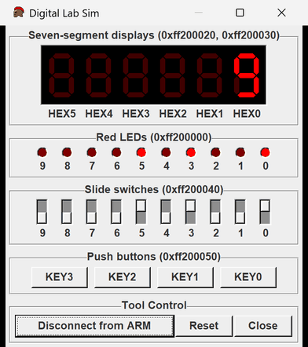
The Digital Lab Sim is the DE1-SoC board's red LEDs, its six seven-segment displays, its slide switches and its push buttons, at their DE1-SoC addresses and with their bit formats, as Intel's DE1-SoC Computer System documentation describes them. CPUlator's DE1-SoC system has the same devices.
Click Connect to ARM: from then on the program's loads and stores at the addresses below reach the board in this window. While the tool is not connected these devices are not simulated: writes to them are ignored, reads give 0, and ARES Messages warns once for each address. The tool stays connected when the program is assembled again or its file is closed. Close closes the tool, and the program no longer reaches the board.
Red LEDs LEDR9-LEDR0, at 0xFF200000: bit k of the word there lights LEDRk (LEDR9 is at the left, as on the board). The program writes the word and reads it back; bits 31-10 are ignored and read 0.
Seven-segment displays HEX5-HEX0: the word at 0xFF200020 drives HEX0 with bits 6-0, HEX1 with bits 14-8, HEX2 with bits 22-16 and HEX3 with bits 30-24; the word at 0xFF200030 drives HEX4 with bits 6-0 and HEX5 with bits 14-8. In the bits of a display, bit 0 lights the top segment, bit 1 the upper right one, bit 2 the lower right one, bit 3 the bottom one, bit 4 the lower left one, bit 5 the upper left one and bit 6 the middle one. The digits 0 to 9 are 0x3F, 0x06, 0x5B, 0x4F, 0x66, 0x6D, 0x7D, 0x07, 0x7F and 0x6F: with R0 = 0xFF200000, MOV R1, #0x3F and STR R1, [R0, #0x20] show 0 on HEX0 and switch HEX1 to HEX3 off. Bit 7 of each byte drives nothing. Both words are read back as they were written.
Slide switches SW9-SW0, at 0xFF200040: bit k of the word there is 1 while SWk is up. Click a switch to flip it. The program cannot write the switches.
Push buttons KEY3-KEY0, from 0xFF200050: a key is pressed while the mouse button is held down on it. The word at 0xFF200050 has bit k = 1 while KEYk is pressed. In the word at 0xFF20005C (Edgecapture) bit k becomes 1 when KEYk is pressed and stays 1 after it is let go, until the program writes any value there, which sets all four bits to 0: a program that polls this word sees every press, even a short one, as long as it writes there only after it read a bit that is 1: a write also forgets a press that came after the read. The word at 0xFF200058 (Interruptmask) keeps the four bits written there, but ARES has no interrupts and no timers: a program polls the keys.
Intel's documentation describes word accesses (LDR, STR). A byte or halfword access (LDRB, STRB, LDRH, STRH) reads or writes those bytes of the word: STRB to 0xFF200021 changes HEX1 alone. Writes to the switches and to the keys' word at 0xFF200050 are ignored, and so are the other words of these ports (such as 0xFF200004), which read 0. While the tool is connected the Data Segment shows the words at 0xFF200000-0xFF20005F as the program reads them.
Like a real board, the board keeps its state when the program is assembled again, reset (Reset, F12) or its file is closed: the LEDs and displays keep what the program wrote, and the switches stay where they are. Backstep undoes what the instruction stepped back wrote to the LEDs, displays, Interruptmask and Edgecapture; the switches and keys stay as they are. The tool's Reset button switches the board off: LEDs and displays dark, switches down, Interruptmask and Edgecapture 0.
The window can be made larger or maximized: the displays, the LEDs and the switches grow with it, in proportion, with their names and numbers. The keys keep their size.
A connected Digital Lab Sim costs nothing while the program does not use these devices; each access to them takes a little time.
Dynamic Instruction Counter
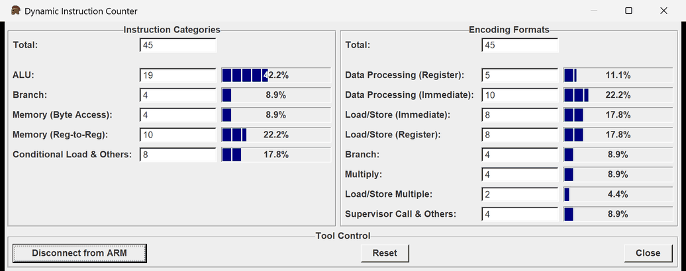
The Dynamic Instruction Counter counts the instructions the program executes, and sorts them into five categories and into the eight ARMv7 encoding formats.
Click Connect to ARM, then run the program (Go, Step): the counts follow the program, also while it runs at full speed. Disconnect from ARM stops the counting; the counts stay. Reset sets them to 0. Close closes the tool and stops the counting.
The window has two panels side by side: Instruction Categories at the left and Encoding Formats at the right. Each starts with Total: the instructions executed while the tool was connected, since it was opened or since its Reset button was pressed. Below it each category or format has its count, its share of Total in per cent with one decimal, and a bar filled as far as that share. Each instruction counts once in each panel, so the counts of a panel add up to Total.
The counts go on when the program is assembled again, reset (Reset, F12) or stepped back (Backstep undoes an instruction, but it was executed): only the tool's own Reset sets them to 0. The tool stays connected when the program is assembled again or its file is closed.
An instruction counts once it has completed. A breakpoint, Pause or Stop comes before an instruction, which counts when it runs. A system call that waits for typed input counts once, when it has its input. The instruction that ends the program with a runtime error does not count, nor does B . at the end of a program, where ARES stops. A conditional instruction counts whether its condition holds or not: the processor executes it either way.
Instruction Categories, the left panel:
ALU: the instructions that compute in the registers, with or without a condition, such as ADD R0, R1, R2, SUB R0, R0, #1, MOV R0, #5, CMP R0, #10, AND R0, R0, #15, LSL R0, R0, #2 and ADDNE R0, R0, #1, and the multiplies MUL, MLA and UMULL. MOV PC, LR counts here too, not as a branch. As DynARMic decides, every instruction of no other category is ALU as well: NOP, the floating-point instructions (VADD.F32 S0, S1, S2, VLDR, VPUSH), the forms of LDM and STM other than LDMIA and STMIA (STMDB R1!, {R2, R3}), and PUSH, POP, LDM and STM with a condition (POPNE {R4, R5}, LDMNE R1, {R2}). Two of them are not: STMDB SP!, {R4, R5} is PUSH {R4, R5}, of Memory (Reg-to-Reg), and PUSHNE {R4} is STRNE R4, [SP, #-4]!, a conditional store.
Branch: B, BL, BX and BLX, with or without a condition: BNE loop counts whether it branches or not.
Memory (Byte Access): the loads and stores of one byte, without a condition: LDRB R0, [R1], STRB R0, [R1, #1] and LDRSB R0, [R1].
Memory (Reg-to-Reg): the other loads and stores without a condition, which move registers to and from memory: of a word, a halfword, two words or several registers, such as LDR R0, [R1], STR R0, [R1, #4], LDR R0, =value, LDRH, STRH, LDRSH, LDRD, PUSH {R4, LR}, POP {R4, PC}, LDM and STM (LDMIA, STMIA). A value that MOV or MVN can give is not loaded: the assembler makes LDR R0, =5 into MOV R0, #5, an ALU instruction.
Conditional Load & Others: the loads and stores with a condition, such as LDRNE R0, [R1], STREQ R0, [R1, #4] and LDRNEB R0, [R1], and the system calls (SVC #1). BKPT is of this category too, but it ends the program with a runtime error, so it is never counted.
Encoding Formats, the right panel:
Data Processing (Register): an operation on registers only, such as ADD R0, R1, R2, MOV R4, R0, CMP R0, R1 or LSL R0, R0, R1.
Data Processing (Immediate): an operation with an immediate (#) operand, such as ADD R0, R0, #1, MOV R0, #5, CMP R0, #10, LSL R0, R0, #2 or ADD R4, R0, R0, LSL #1 (a shift by a constant). Instructions of no other format count as data processing too: as immediate when they have an immediate operand, else as register. NOP and VMUL.F32 S0, S0, S1 count as register, VLDR D1, [R1, #8] as immediate.
Load/Store (Immediate): LDR, STR, LDRB, STRB, LDRH, STRH ... with an immediate offset or none: LDR R0, [R1], STR R0, [R1, #4], LDR R0, =value. As DynARMic decides, an offset in R9 to R12, SP or LR (LDR R0, [R1, R9]) and an offset after the brackets (LDR R0, [R1], R2) count here too. A value that MOV or MVN can give is not loaded: the assembler makes LDR R0, =5 into MOV R0, #5, which counts as Data Processing (Immediate).
Load/Store (Register): an offset in a register: LDR R0, [R1, R2], STR R0, [R1, R2, LSL #2], LDR R0, [R1, -R2].
Branch: B, BL, BX and BLX, with or without a condition, as in Instruction Categories.
Multiply: MUL, MLA, MLS and the long multiplies SMULL, UMULL, SMLAL, UMLAL.
Load/Store Multiple: PUSH, POP, LDM and STM, such as PUSH {R4, LR}, POP {R4, PC} and POP {PC}. A PUSH of one register other than SP counts as Load/Store (Immediate): the assembler makes PUSH {LR} into STR LR, [SP, #-4]!, as the Text Segment's Basic column shows. LDR R4, [SP], #4 is POP {R4} and counts here.
Supervisor Call & Others: the system calls, such as SVC #1. BKPT is of this format too, but it ends the program with a runtime error, so it is never counted.
The Dynamic Instruction Counter and its classification come from DynARMic (GLSVLSI 2026), a dynamic ARM instruction counting tool, with its author's permission.
While the tool is connected a run takes a little longer: ARES counts each group of instructions that runs without a branch. A loop of 10,000,000 instructions takes about a second instead of a tenth of a second.
Floating Point Representation
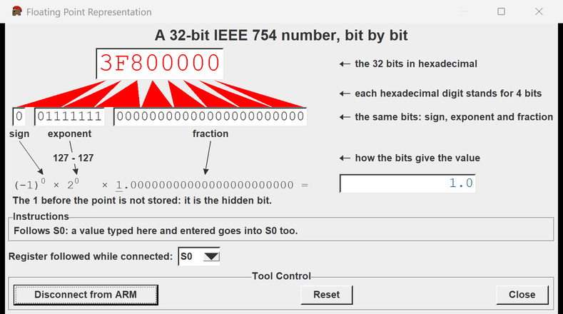
Floating Point Representation shows how a floating-point number is stored in 32 bits, in the IEEE 754 single-precision format of the S registers: the bits in hexadecimal, the same bits in binary as the sign, the exponent and the fraction, and the value in decimal. Below the bits it shows how they give the value.
Change any of the five fields: type into it and press Enter, or move to another field (Tab, or a click). Every field then shows the new value. What a field cannot take rings the bell and stays in the field, which keeps the keyboard focus, with a note in Instructions, until it is corrected; Escape puts back what the field showed. A field left as it was keeps the value as it was: a NaN keeps its bits.
Hexadecimal: 1 to 8 digits 0-9 and A-F; 0x before them is allowed. Sign: one bit, 0 for a positive and 1 for a negative number. Exponent: up to 8 bits. Fraction: up to 23 bits. Fewer digits or bits than the field holds are filled up with zeros on the left. Decimal: a number such as 1.5, -0.25 or 6.02E23, or Infinity or NaN, rounded to the nearest single-precision value. Decimal values are written and read as in the Coproc 10 tab.
How the bits give the value. Each hexadecimal digit stands for 4 bits, as the red triangles show. For an exponent e from 1 to 254 the value is (-1)^sign × 2^(e - 127) × 1.fraction: the 1 before the point, underlined, is not stored (the hidden bit). The exponent 0 gives zero and the subnormal numbers: (-1)^sign × 2^(0 + 1 - 127) × 0.fraction. The exponent 255 (all ones) gives infinity when the fraction is 0, and NaN (not a number) otherwise.
Connect to ARM: the tool follows the register chosen at the bottom, S0 to S31, in the assembled program. It shows the register's value after each Step, while the program runs, and after Backstep, Reset and a change in the register tabs. While the program does not run (before it starts, paused or finished), a value typed into the tool goes into the register, and the Coproc 10 and Coproc 11 tabs show it at once (S2n and S2n+1 are the halves of Dn). While the program runs or waits for input, the fields only show the register. Connected before a program is assembled, or after its file was closed, the tool waits for one and changes no register. Choosing another register shows its value at once. Disconnect from ARM: the tool is a converter again, and the value stays.
Reset sets the value to 0.0; while the tool follows a program that does not run, it sets the register to 0.0 too, and while the program runs it changes nothing. The tool stays connected when the program is assembled again or its file is closed. Close closes the tool.
Following a register costs the program nothing while it runs: the tool reads the register only when the window shows the program's state.
Keyboard and Display MMIO Simulator
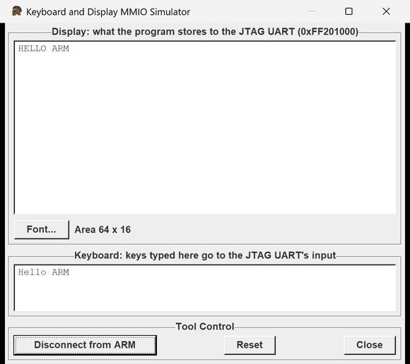
The Keyboard and Display MMIO Simulator is a keyboard and a text display on the JTAG UART of the DE1-SoC computer: the serial port at 0xFF201000 that programs use for text input and output through memory-mapped I/O (MMIO), reading and writing its registers as memory.
Click Connect to ARM, then run the program (Go, Step). While the tool is connected, the display shows what the program writes to the JTAG UART, and keys typed in the keyboard area go to the program. Disconnect from ARM stops this; what the tool shows stays. Close closes the tool.
Display: what the program stores to the JTAG UART's data register (0xFF201000) appears in the display at once, as it does in Run I/O, which keeps showing it: the low byte of each value stored, the bytes read as UTF-8 text. Text printed by system calls (SVC) appears only in Run I/O. Long lines wrap, and the display keeps the newest 100,000 characters. A program never has to wait before it writes: the JTAG UART's control register (0xFF201004) always reports room for 64 characters in its bits 31-16, and each character shows at once.
Keyboard: each key typed in the keyboard area goes at once to the JTAG UART's input and appears in the area. Return gives a line feed (10), Tab 9 and BackSpace 8, which also takes the last character away in the area; Paste types the clipboard's text. The program reads the input from the data register (0xFF201000), a byte at each read: bit 15 (RVALID) is 1 when a byte is there, bits 7-0 are the byte and bits 31-16 count the bytes still waiting after it. A key outside ASCII comes as its UTF-8 bytes. ARES has no interrupts: a program reads the data register again and again until RVALID is 1.
The keyboard area and Run I/O type into the same input: keys typed in Run I/O while the program runs go there too, and keys the program has not read when a read service (such as SVC #5 or SVC #8) waits become the start of the line it reads. While a read service waits for its line, type the line in Run I/O. The keyboard area takes keys while the tool is connected and a program is assembled and ready, running or paused; at other times a key rings the bell.
Two characters do more on the display. A form feed (12) clears it. A bell (7) moves the display's cursor to a column and a row given in the other bits of the word stored with it: the column in bits 31-20 and the row in bits 19-8 (store the word with STR; a byte stored with STRB moves the cursor to column 0, row 0). Column 0, row 0 is the top left corner; a column or row past the edge counts as the last one.
From the first bell on, the display is a grid of 64 columns and 16 rows, filled with spaces. Each character replaces the one at the cursor, which moves one column right, from the last column to the start of the next row; in the bottom right corner it stays. A line feed (10) moves the cursor to the start of the next row (on the bottom row, to its own start), a carriage return (13) to the start of its row, a tab (9) to the next column that is a multiple of 8, and a BackSpace (8) one column left. A form feed fills the grid with spaces again and moves the cursor to column 0, row 0. Below the display the tool shows the cursor's column and row, and the size of the grid. With the grid a program can draw a screen of text, such as the board of a game.
Reset clears the display and the keyboard area, and makes the display plain text again. Nothing else clears them: they keep their text when the program is assembled again, reset (Reset, F12) or stepped back, and when its file is closed; the tool stays connected.
Font... chooses the font of the display and the keyboard area. The display keeps room for 64 characters and 16 lines of it, the keyboard area for 64 characters and 4 lines, and the window grows to the size the font needs if it is smaller.
The window can be made larger or maximized: the display and the keyboard area grow and show more lines; the lines stay 64 characters long.
The JTAG UART is the one of the DE1-SoC computer as CPUlator simulates it, so programs that use it run there as well; clearing with a form feed and moving the cursor with a bell are features of this tool's display.
Memory Reference Visualization
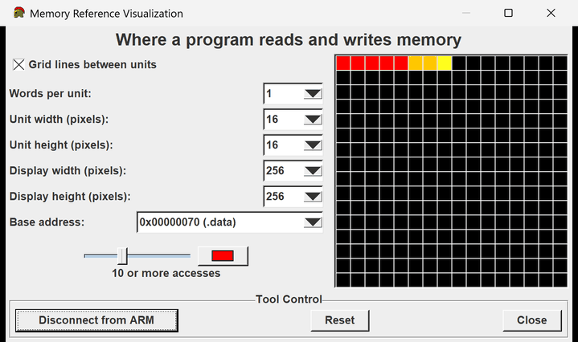
The Memory Reference Visualization shows which memory the program uses, and how often. Its display is a grid of units: each unit stands for one or more words of memory, from the base address on, row by row from the top left. Each time the program reads or writes the memory of a unit, or executes an instruction from it, the unit's count goes up by one, and the unit takes the colour of its count.
Click Connect to ARM, then run the program (Go, Step): the display follows the program, also while it runs at full speed; at a slow run speed you see the pattern grow. Disconnect from ARM stops the counting; the colours stay. Reset sets every count to 0. Close closes the tool and stops the counting.
Words per unit: how many words of memory one unit stands for, 1 to 2048. Unit width and unit height: the size of a unit, in pixels. Display width and display height: the size of the display, in pixels; it has as many units as fit in it.
Base address: the address of the first unit, at the top left. .data is where the program's data starts (its first section that is not code, or the end of the program when it has none). heap is where SVC #9 hands out memory. .text is the start of the program's code. These three are places of the program: while no program is assembled, the list shows them gray, with "no program assembled" instead of an address, and they cannot be chosen. When a program is assembled, the display moves to the same place in it. current SP is the page of the stack pointer, as the Data Segment shows it. Unlike the places of the program, it can be chosen also without a program. While SP has its start value 0 the list says "current SP: stack at 0xfffffffc", and the display starts at the page that holds that word, the top of the on-chip memory, where the first PUSH stores. current SP is SP's page when you choose it: to watch a stack the program sets up itself, choose current SP again once SP has its value.
Choosing a setting or a base address starts the display again: every count goes back to 0.
Grid lines between units: a line along the top and the left edge of every unit, in the colour opposite to that of no access.
The window can be made larger or maximized: the display grows with it, in proportion, each unit a whole number of screen pixels, never smaller than in the window as it opens. The settings and the colours keep their size.
The colours: no access black, 1 access blue, 2 green, 3 to 4 yellow, 5 to 9 orange, 10 or more red. To change one, choose a number of accesses with the slider (0 to 10, then in steps up to 1,000,000), then click the colour button beside it and choose the colour: it applies from that number of accesses up to the next number that has a colour of its own. The text under the slider says which numbers of accesses the button's colour stands for.
What counts: each read and each write of the program's instructions (LDR, STR, LDRB, STRH, PUSH, POP, LDM, STM, VLDR, VSTR ...), once for each word it reads or writes, in the unit of that word: PUSH {R0, R1} and VSTR D0 each write two words and count two accesses, and an unaligned LDR R0, [R1, #2] reads from two words and counts once in the unit of each. STREX counts two when it stores, as the processor ARES simulates reads the word before it writes it. Each instruction executed counts as a read of its own word once it has completed, as in the Dynamic Instruction Counter: a conditional instruction counts whether its condition holds or not. Memory that a system call reads or writes for the program (the string SVC #4 prints, the line SVC #8 reads) does not count.
The counts go on when the program is assembled again (unless the display moves), reset (Reset, F12) or stepped back (Backstep undoes an instruction, but its accesses happened): only the tool's Reset button, its settings and its base address set them to 0. The tool stays connected when the program is assembled again or its file is closed.
While the tool is connected a run takes longer: ARES counts each access to the memory shown and, while the display shows some of the program's code, each group of instructions that runs without a branch. A loop of 10,000,000 instructions whose code is shown takes about a second instead of a tenth of a second, and every 1,000,000 accesses to the memory shown add about half a second.
Pipeline Simulator
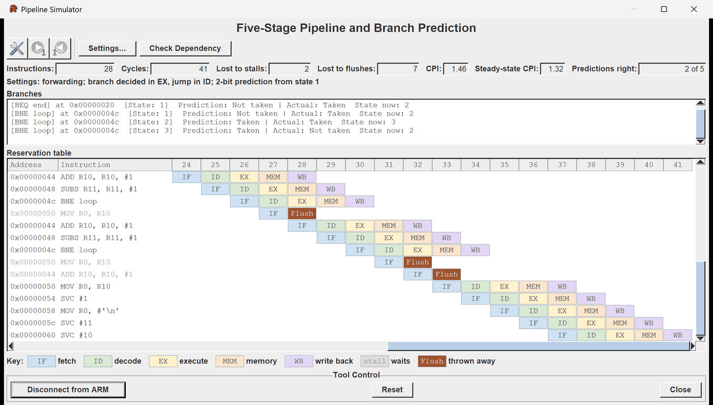
The Pipeline Simulator shows how the program's instructions would pass through a pipeline of five stages: IF (fetch the instruction), ID (decode it and read its registers), EX (execute), MEM (memory) and WB (write the result back). Each instruction spends one clock cycle in each stage, and up to five instructions are in the pipeline at once, so a program takes about one cycle for each instruction, plus the cycles its data and its branches cost. The settings are those of the tool it follows: data forwarding, the stages in which branches and jumps change the PC, and branch prediction.
ARM X-Ray and the Pipeline Simulator show the same stages in two ways. ARM X-Ray shows one instruction going through a datapath that does everything in one clock cycle; the Pipeline Simulator shows when each instruction would be in each stage of a datapath cut into five stages, with several instructions inside at once. The stages have the same names in both (Fetch is IF, Decode ID, Execute EX, Memory MEM and Write back WB), and the program's results never differ: only the timing does.
Click Connect to ARM, then run the program (Go, Step). The tool's own Assemble, Step and Backstep buttons do what the main window's do (F3, F7, F8). The numbers follow the program, also while it runs at full speed; the branch lines and the table get their newest lines when the run stops. Backstep takes the instruction it undoes out of the pipeline again, and Reset (F12) and Assemble empty the pipeline. Disconnect from ARM stops the observing; what the tool shows stays. The tool's own Reset starts its numbers again from zero. Close closes the tool.
What the window shows
The line of numbers: Instructions, how many the program executed; Cycles, the cycle in which the last of them leaves WB, which is the instructions + 4 + the cycles lost; Lost to stalls, the cycles lost while instructions waited (the stall cells); Lost to flushes, the cycles lost to instructions fetched and thrown away; CPI, the cycles divided by the instructions; Steady-state CPI, the same without the 4 cycles that fill the pipeline at the start; and Predictions right, of the predictions made. Rest the mouse on a number to see what it is, with its sum worked out with the numbers shown, for example CPI = cycles / instructions = 62 / 28 = 2.21. Under the numbers stand the settings in force.
CPI is cycles / instructions. Steady-state CPI is (cycles - 4) / instructions: the CPI without the four cycles that only fill the pipeline at the start, so the number a long program comes near. After the first Step of the walk below, 1 instruction has taken 5 cycles: CPI 5 / 1 = 5.00, and steady-state CPI (5 - 4) / 1 = 1.00, as each instruction after the first adds one cycle when nothing waits.
Each instruction is named as you wrote it, as the Source column of the Text Segment shows it without its line number and comment: MOV R0, #20, not MOV R0, #0x14; BNE next, not BNE #0x24. The table, the branch lines, the tips and Check Dependency all name it so. Rest the mouse on an instruction in the table to see its Basic form, as the Basic column shows it. A word without a line of its own, such as a word of data thrown away after a branch or the second word of a line that makes two, shows its Basic form.
The branch lines: a line for every branch that runs, the newest last, as the tool it follows writes them: the instruction and its address, the state of the predictor before it, the prediction, what the branch did, and the state now. The tool keeps the last 1,000 lines.
The reservation table: a row for every instruction that enters the pipeline, with its address and its text, and a column for every clock cycle. Each cell holds the stage the instruction is in, one colour for each stage, as the key under the table shows. An instruction that must wait keeps its stage, and those cells say stall, in gray. Rest the mouse on one to see what it waits for, for example: waits for R3 from LDR R3, [R1] at 0x00000014. Instructions fetched and thrown away have rows of their own, in gray letters, whose last cell says Flush; the mouse on it says why. The table shows the last 500 rows, with the newest row and the newest cycle in view; scroll it with its bars or the mouse wheel (with Shift the wheel scrolls sideways).
Make the window larger, or maximize it, and the table shows more rows and more cycles, and the branch lines more of each line; the numbers and the buttons keep their size. The window can be made smaller down to five rows of the table. Check Dependency's list grows with its window in the same way.
The settings
Settings... opens the settings in three groups, as the tool it follows has them. Confirm Settings works the numbers, the branch lines and the table out again for the instructions already run, so that you see at once what a setting changes. Reset Default Settings puts the first settings back in the window; Confirm Settings then uses them. Escape closes the window and keeps the settings as they were. Choices that do not apply are gray. Rest the mouse on WB and ID in the same cycle, Branch stage, Jump stage or the line of the states to see what it means.
Data dependency. Data forwarding: No (at first) or Yes. Without forwarding an instruction reads its registers in ID, after the instruction that writes them has left WB: two neighbours that depend on each other lose 3 cycles, at a distance of two 2, and at a distance of three 1. WB and ID in the same cycle (No at first), without forwarding: Yes lets the reader's ID share the writer's WB cycle, a cycle less: 2, 1 and 0. With forwarding a result is passed on as soon as EX has made it, and a value loaded from memory as soon as MEM has read it: the instruction right after a load that uses the loaded value waits one cycle, and no other waits.
Control dependency. Branch stage, the stage in which a branch updates the PC: ID, EX (at first) or MEM; and Jump stage, the stage in which a jump does: ID (at first) or EX. Without prediction nothing is fetched until a branch is decided, so it costs 1, 2 or 3 cycles, taken or not, and the row after it starts with stall cells. A jump costs 1 or 2 cycles, always.
Branch prediction. No prediction (at first). Static: every branch is predicted always taken, or always not taken. Dynamic: a state for each branch predicts it, and moves one up when the branch is taken and one down when it is not. With 1 bit, state 0 predicts not taken and state 1 taken. With 2 bits, states 0 and 1 predict not taken and states 2 and 3 taken (State 0 <--> State 1 <--> State 2 <--> State 3), so a branch in state 0 or 3 must go the other way twice before its prediction changes. First state sets the state each branch starts in. One state for all branches makes all branches share one state.
The prediction is made at the end of ID. Predicted not taken, fetching goes on in line; predicted taken, the one instruction already fetched in line is thrown away and fetching goes on at the branch's target. When the branch is decided, a wrong prediction throws away everything fetched since. So a right prediction costs 0 cycles (not taken) or 1 (taken), and a wrong one 2 or 3 for a branch decided in EX or MEM. A branch decided in ID is known as early as the prediction, and its outcome is used: 1 cycle if taken, 0 if not.
Check Dependency
Check Dependency opens Corrected Program Code: the program as it is written, with the NOPs that a pipeline without any stalling or flushing hardware would need under the settings in force, each marked "@ added by the checker". The one line above the program counts them, for example NOPs added: 26, and says No program assembled when there is none. The window follows Confirm Settings and Assemble; Escape or its close box closes it. As the tool it follows does, it reads the program in the order it is written and does not follow branches. Between two neighbours that depend on each other it puts 3 NOPs without help, 2 when WB and ID share a cycle, and none with forwarding, but 1 after a load. Without prediction it puts 1, 2 or 3 NOPs after a branch decided in ID, EX or MEM, 1 or 2 after a jump, and after any other instruction that writes the PC as many as it costs; with prediction it puts none after any of them, as the tool it follows does. For code without branches, the checker's NOPs are the table's stall cycles.
How ARES differs from the tool it follows, and why
ARES runs the program as always. The tool watches the instructions that execute and works out in which cycle each would be in each stage, so the settings never change what the program does, only the timing. Where the tool it follows leaves the repair to NOPs, ARES shows what the hardware would do: an instruction that must wait keeps its stage, in stall cells, and the instructions fetched and thrown away are rows of their own.
The instructions thrown away are read from memory at the addresses the pipeline would have fetched, and are never executed. A row thrown away on a literal word, such as the words of LDR R0, =value after the code, shows the word as data; past the end of memory it says no instruction here.
ARM branches test the flags N, Z, C and V, not two registers. The flags are written at the end of EX of the instruction that sets them and do not pass through WB, so a branch decided in ID waits one cycle when the instruction just before it sets the flags, and a branch decided in EX or MEM never waits for them. Other conditional instructions check their condition in EX and never wait.
ARM's branch and jump: B with a condition is the tool's branch, and B and BL without a condition are its jump. BL with a condition is a branch that also writes LR. Every other instruction that writes the PC (BX, MOV PC, LDR into the PC, POP with the PC) is a branch that is taken always and never predicted, decided in the branch's stage, or in MEM when the PC comes from memory. Decided in ID it needs its register in ID: with forwarding, one cycle earlier than other instructions need theirs.
The registers: every register an instruction reads counts, also the base of an address, the register that gives a shift amount and the register a store writes to memory (the PC read as a value never waits), against every register an earlier instruction writes, also a base with write-back, LR of BL and every register of POP. Floating-point registers count the same way (D0 is S0 and S1). A conditional instruction counts as reading and writing what it names whether or not its condition holds.
Every instruction takes one cycle in each stage, also PUSH, POP, MUL and the floating-point instructions, which a real processor needs more cycles for. An SVC counts as one instruction that reads and writes the registers of its service.
With forwarding, the instruction right after a load that uses the loaded value waits one cycle. The tool it follows does not show this case in its table.
The predictor keeps a state for each branch address, as processors do. The tool it follows keeps a single state for all branches: One state for all branches gives its way.
ARES says ID where the tool it follows says DEC, for the stage that decodes the instruction.
Confirm Settings works the numbers out again from the instructions already run, so that the settings can be compared on the same run.
The tool it follows has a Set Reg Value button. ARES needs none: set a register in the Registers pane while no program is running: double-click its value, type the number and press Enter.
A walk through pipeline_tour.s
Open File > Open Example > pipeline_tour.s, assemble it (F3), open the Pipeline Simulator and click Connect to ARM. The program starts as the test program of the tool it follows: two equal values, a BNE that is not taken, and a BEQ that is taken over three lines. Then come a load followed by its use, a short loop that runs three times, and the result, 16, printed with SVC #1. It executes 28 instructions.
With the first settings (no forwarding, branches decided in EX, no prediction), press F7 once: MOV R0, #20 passes the five stages in 5 cycles, CPI 5.00 and steady-state CPI 1.00. Press F5 for the rest. CMP R0, R1 waits 3 cycles for R1 from the MOV just before it: rest the mouse on its stall cells. Each of the five branches executed costs 2 cycles, and the row after it starts with stall cells. LDR R10, [R9] waits for R9 and ADD R10, R10, R8 for R10. All 30 cycles lost are lost to stalls: 62 cycles, CPI 2.21, steady-state CPI 2.07.
In Settings..., choose Data forwarding Yes, then Confirm Settings. The waits for the MOVs and the CMPs are gone; only the two loads still cost a cycle each, as the next instruction uses the value they load, and the branches still cost 2 cycles each: 44 cycles, CPI 1.57, steady-state CPI 1.43. Deciding the branches in ID instead gives as many cycles: each branch then costs 1 cycle, but waits 1 cycle for the flags of the CMP or SUBS just before it.
Now keep forwarding and choose Dynamic prediction with 2 bits, first state 1, as in the tool it follows. BNE is predicted not taken and is not taken: no cycle lost. BEQ is predicted not taken but is taken: MOV R5 and MOV R6, fetched in line, are thrown away (Flush), 2 cycles. In the loop, BNE is predicted wrong the first time (2 cycles), right the second (1 cycle, for the instruction fetched in line) and wrong when the loop ends (2 cycles). 2 of the 5 predictions are right: 41 cycles, CPI 1.46, steady-state CPI 1.32. Check Dependency says NOPs added: 26 for the first settings, 8 with forwarding and 2 with prediction.
How much of the run the tool keeps
To work the numbers out again for other settings, the tool keeps the run: every instruction, up to 1,000,000. For a longer run it keeps the last 1,000,000 or a little more, dropping the oldest a hundred thousand or more at a time, and the numbers worked out for new settings count from the oldest instruction kept, as the line of the settings then says. The numbers for the settings in force always cover the whole run. Working them out again for a million instructions takes a fraction of a second. Backstep takes its instructions out of what is kept too, so Confirm Settings afterwards works on the instructions that remain.
Backstep, Reset and Assemble
The pipeline holds the instructions of the run going on. Backstep takes the instruction it undoes out again: its row, its cycles, its stalls and flushes, its branch line and what the predictor learned from it. One Step and one Backstep leave the tool as it was before the Step. After a run at full speed this holds as far back as the main window can step back: Backstep can then undo up to the last 2,000 instructions when Settings > Enable Backstep While Running is on. A Backstep only takes out instructions the tool took in: not those that ran while it was not connected.
Reset (F12) and Assemble empty the pipeline, as a pipeline cannot keep the instructions of a run that is gone; the tool's own Reset empties it too. The tool stays connected when the program is assembled again or its file is closed. Disconnect from ARM keeps what the tool shows, and Connect to ARM goes on from there, unless the program was reset or assembled in between. A breakpoint, Pause or Stop comes before an instruction, which enters the table when it runs.
While the tool is connected a run takes longer: ARES works out each group of instructions that runs without a branch, and looks at each conditional branch as it runs. A loop of 10,000,000 instructions takes a few seconds instead of a tenth of a second.
The Pipeline Simulator follows the Pipelined Simulator and Branch Explainer of Di Xiang Lim and Smitha K G, a plug-in for MARS (IEEE TALE 2019).
Memory Map
Tools > Memory Map shows the memory of the simulated DE1-SoC computer, one entry per range, as the Memory and devices tab describes it. While a program is assembled, its parts (.text, .data) are listed under the DDR3 memory with their sizes.
"SP now:" under the table shows SP's value at this moment. It changes as the program runs, steps, backsteps or is reset, and when you change SP in the Registers tab. Without an assembled program it shows SP's start value, 0x00000000.
The window can stay open while you work and while the program runs. Choosing Tools > Memory Map again brings it to the front.